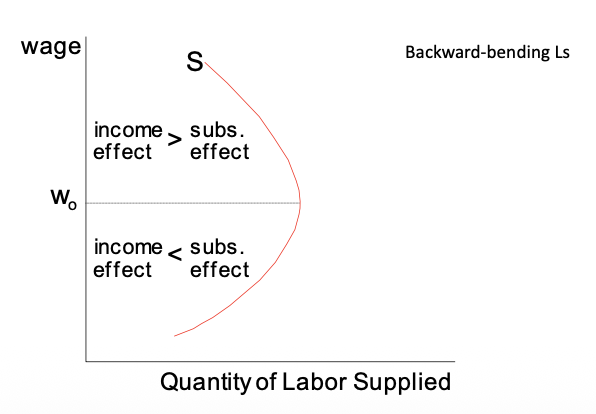
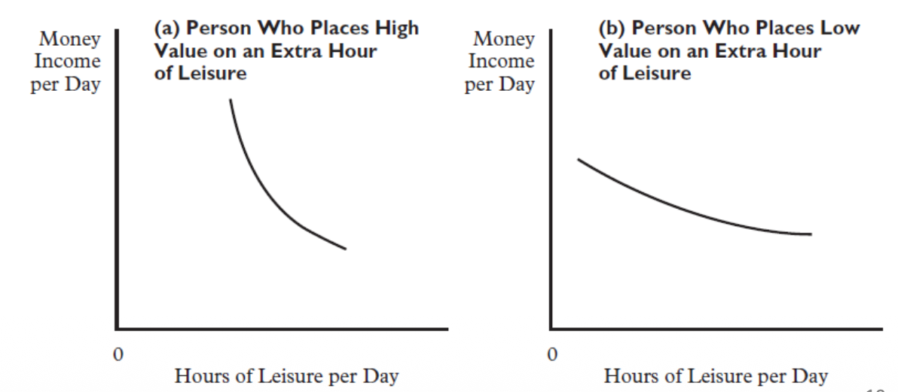
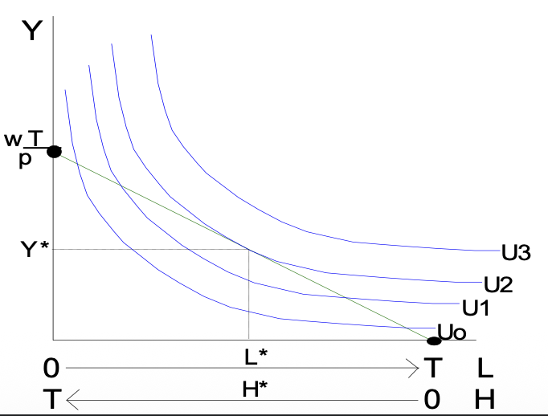
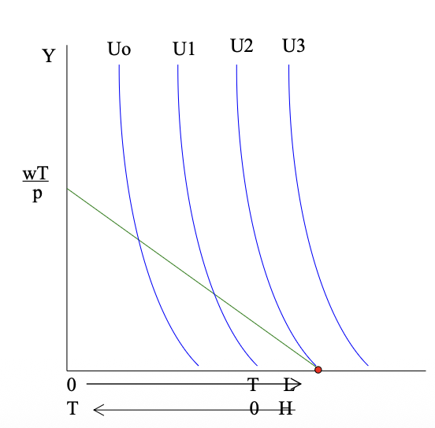
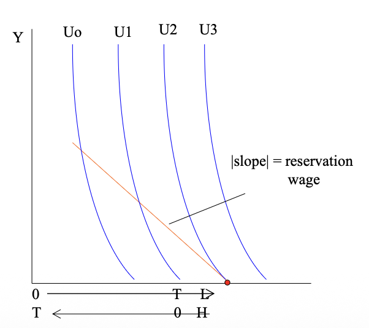

5. Labour Supply Model
⏳ Basic Neoclassical Model of Labour Supply
The neoclassical model examines how individuals allocate their limited time between work (labour) and non-work (leisure). It assumes that individuals are rational agents who aim to maximize their utility.
Fundamental Assumptions
- The Labour-Leisure Trade-off: There are only two uses of time: **Labour** and **Leisure**.
- Utility Maximization: Individuals select the combination of work and leisure that maximizes their level of satisfaction (Utility).
🛋️ The Demand for Leisure
Leisure is modeled as a normal good. Its demand depends on:
1. Preferences
Subjective valuation of free time vs. material goods.
2. Wealth/Income
Higher income generally leads to more leisure (↑ Income → ↑ Hours of leisure).
3. Opportunity Costs
For those working, the opportunity cost of an hour of leisure is the wage rate ($W$).
➡️ Individuals choose not to work if the value of their leisure time exceeds the market wage.
⚖️ Substitution and Income Effects
A change in the wage rate creates two conflicting effects on the quantity of labour supplied:
Substitution Effect (SE)
As wages rise, leisure becomes more expensive. Individuals consume less leisure and work more.
(Positive impact on work hours)
Income Effect (IE)
Higher wages increase real income. If leisure is a normal good, individuals "buy" more leisure and work less.
(Negative impact on work hours)
The Net Effect
Usually, both effects occur simultaneously. The total change in labour supply depends on which effect is stronger:
- Increases if Substitution Effect > Income Effect ($SE > IE$).
- Decreases if Income Effect > Substitution Effect ($IE > SE$).
📈 The Backward-Bending Labour Supply Curve
The Individual Supply Curve (S)

This curve demonstrates how the dominance of the two effects shifts as wages rise:
- At Low Wages (Rising Phase): $SE > IE$. Individuals work more as the wage increases. The opportunity cost of leisure is high.
- At $W_0$: The effects are balanced.
- At High Wages (Backward-Bending): $IE > SE$. Individuals are "rich enough" to value an extra hour of leisure more than the extra income from work.
💡 Summary: The labor supply initially increases with wages but eventually decreases when the Income Effect becomes dominant.
🧠 Preferences
An indifference curve is a graphical representation of alternative combinations of goods that provide a given level of satisfaction (utility) to an individual.
The Utility Function
We assume that an individual's utility depends on two "goods": Real Income ($Y$) and Leisure ($L$). These two goods can substitute for each other to some extent, and both generate satisfaction.
Indifference Curves
An indifference curve is downward sloping because an individual is willing to give up some income to receive additional leisure (or vice versa) while maintaining the same level of utility.
Income-Leisure Trade-off

As leisure increases (moving right), the individual must give up income (moving down) to stay on the same curve.
Comparison of Leisure Preferences

(a) High Value on Leisure
Individual has steep curves. They value leisure deeply and require a very large increase in income to give up even a small amount of free time. They tend to work fewer hours.
(b) Low Value on Leisure
Individual has flatter curves. They are willing to sacrifice free time for relatively small gains in income. They tend to work more hours.
🎯 Constrained Maximization
Individuals attempt to attain the highest possible level of utility. However, their choice is restricted by two fundamental constraints:
- A Time Constraint: Limited hours in a day.
- A Goods (Budget) Constraint: Limited income potential.
1. The Time Constraint
Total time available ($T$) is split between hours of work ($H$) and leisure ($L$):
Typically, if we exclude maintenance time (sleep, etc.), $T$ is approximately 16 hours per day.
2. The Goods Constraint
Your spending on real income ($pY$) must be equal to your earnings ($wH$):
Where $w$ is the wage rate, $H$ is hours worked, $p$ is the price index, and $Y$ is real income.
3. The Budget Constraint (Algebraic Derivation)
If we combine the two constraints by substituting $H = T - L$ into $pY = wH$:
The Full-Income Constraint
Rearranging the equation gives the Full-Income Constraint:
- Full Income ($wT$): The individual's maximum possible earnings potential if they worked all available time.
- This total "wealth" covers both the explicit cost of goods ($pY$) and the implicit cost (opportunity cost) of leisure ($wL$).
The Final Budget Line Equation
The relationship between real income ($Y$) and leisure ($L$) defines the budget constraint:
This linear equation shows that the slope of the budget constraint is negative the real wage ($-\frac{w}{p}$), representing the market rate at which you can trade leisure for income.
⚖️ Optimal Work/Leisure Mix
Interior Solution: The Optimal Choice

Visual Interpretation:
- The budget constraint (green line) shows all combinations of income ($Y$) and leisure ($L$) the individual can afford.
- The indifference curves ($U_0, U_1, U_2, U_3$) represent different levels of satisfaction.
- Utility is maximized at the point of tangency between the highest possible indifference curve and the budget constraint.
Analytical Interpretation
The consumer maximizes utility $U(Y, L)$ subject to the budget constraint $Y = \frac{w}{p}(T - L)$.
The tangency condition at the optimal point ($L^*$, $Y^*$) is:
Where:
This means the individual chooses their optimal leisure hours such that the subjective value they place on the last hour of leisure (Marginal Rate of Substitution) is exactly equal to its market value (the real wage).
- $L^*$: Optimal leisure hours.
- $H^*$: Optimal work hours ($T - L^*$).
- $Y^*$: Optimal real income.
🚩 Corner Solution
When Choosing Not to Work is Optimal

Visual Interpretation:
A corner solution occurs when the highest attainable level of utility is found at one of the extremes of the budget line—in this case, at zero hours of work ($H = 0$) and maximum leisure ($L = T$).
Analytical Interpretation
A corner solution at zero hours of work happens when the individual's indifference curves are very steep, such that even for the first hour of work:
This implies that:
- The individual values leisure time more than any wage the market is currently offering.
- The opportunity cost of time is relatively high compared to the market wage rate.
➡️ Result: The individual chooses to remain out of the labour force.
📉 Reservation Wage
The Minimum Price for Labour

Visual Interpretation:
- The reservation wage ($w^r$) is represented by the slope of the indifference curve at the point where the individual is not working ($L = T, H = 0$).
- This slope (the orange line in the graph) represents the value placed on the very first hour of lost leisure time.
Analytical Interpretation
Formal definition of the reservation wage:
Or expressed via marginal utilities:
Economic Meaning: It is the absolute minimum wage that would make an individual willing to sacrifice even one hour of leisure to enter the market. If the offered market wage is below this level, the individual will not work.
Real Wage > Reservation Wage

Condition: $\frac{w}{p} > w^r$
The budget constraint (green) is steeper than the reservation wage slope (orange).
Result: The individual can reach a higher utility curve by working. They participate in the labour force ($H > 0$).
✅ Labour Market Entry
Real Wage < Reservation Wage

Condition: $\frac{w}{p} < w^r$
The budget constraint (green) is flatter than the reservation wage slope (orange).
Result: The market wage is too low to compensate for the loss of leisure. The individual stays at the corner solution ($H = 0$).
❌ Remains Out of Labour Force